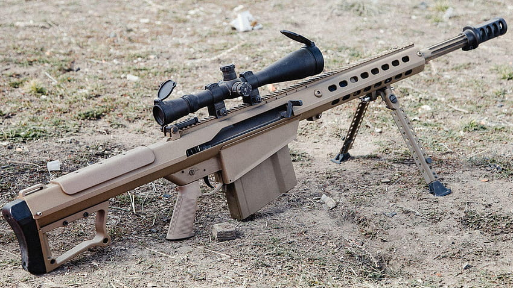

Glock 19X
La glock 19x es una pistola de calibre 9mm de una gran capacidad de municion capaz de ser equipada con varios accesorios muy utiles para el combate como miras, supresores, linternas, laseres, etc. Sus meteriales son muy resistentes al clima y es de facil mantenimiento.

P90
La P90 es un subfusil de tipo bullpup lo cual permite una facil adaptacion a cualquier usuario. Tambien se le pueden equivar varios accesorios para mejorar la experiencia como supresores, miras, linternas, etc. Esta hecha de materiales livianos y duraderos y su cargador promedio es de 30 cartuchos.

Barret Cal.50
El mitico rifle antimateria de Barret es un fusil de presicion ultra poderoso capaz de atravezar casi cualquier tipo de material haciendo casi imparable. Su cartucho propiedio es de 5 cartuchos aunque puede ser ampliado a 10 en algunas versiones. El uso de este rifle no es para cualquiera gracias a su fuerte retroceso.
